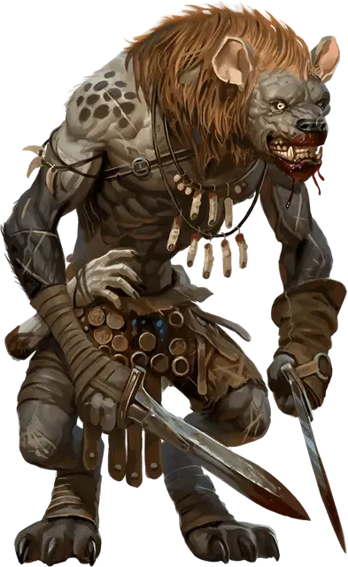

Гнолл глодатель
Gnoll Flesh Gnawer
Средний Монстр, обычно хаотично-злой

Класс Доспеха 14 (клепаная кожа)
Хиты 22 (4к8 + 4)
Скорость 30 футов
| мод | спас | ||
|---|---|---|---|
| СИЛ | 12 | +1 | +1 |
| ЛОВ | 14 | +2 | +4 |
| ТЕЛ | 12 | +1 | +1 |
| мод | спас | ||
|---|---|---|---|
| ИНТ | 8 | −1 | −1 |
| МДР | 10 | +0 | +0 |
| ХАР | 8 | −1 | −1 |
Чувства тёмное зрение 60 футов, пассивное Восприятие 10
Языки Гноллий
Опасность 1 (200 опыта)
Бонус мастерства +2
Среда обитания Арктика, Лес, Луг, Холмы
Действия
Мультиатака. Гнолл совершает одну атаку Укусом и две атаки Коротким мечом.
Укус. . Рукопашная атака оружием: +4 к попаданию, досягаемость 5 футов, одна цель. Попадание: 4 (1к4 + 2) колющего урона.
Короткий меч. . Рукопашная атака оружием: +4 к попаданию, досягаемость 5 футов, одна цель. Попадание: 5 (1к6 + 2) колющего урона.
Внезапная спешка. . До конца хода скорость гнолла увеличивается до 60 футов и он не провоцирует атак.
Бонусные действия
Буйство. После того как гнолл уменьшает хиты существа до 0 рукопашной атакой в свой ход, он перемещается на расстояние до половины своей скорости и совершает атаку Укусом.
Описание
Эти гноллы предпочитают короткие клинки оружию дальнего боя, которыми они орудуют с небывалой скоростью и эффективностью. В гуще сражения они носятся по полю боя рубя и рыча, сбивая с ног отступающих и добивая раненых врагов.
Гноллы
Первые гноллы были гиенами, изменёнными с помощью магии. Многие из них были затем развращены повелителем демонов Йеногу. Независимо от того, служат ли они Йеногу или посвящают себя спасению своих сородичей, боевые отряды гноллов стремятся смять врагов внезапными атаками, не оставляя никого в живых.